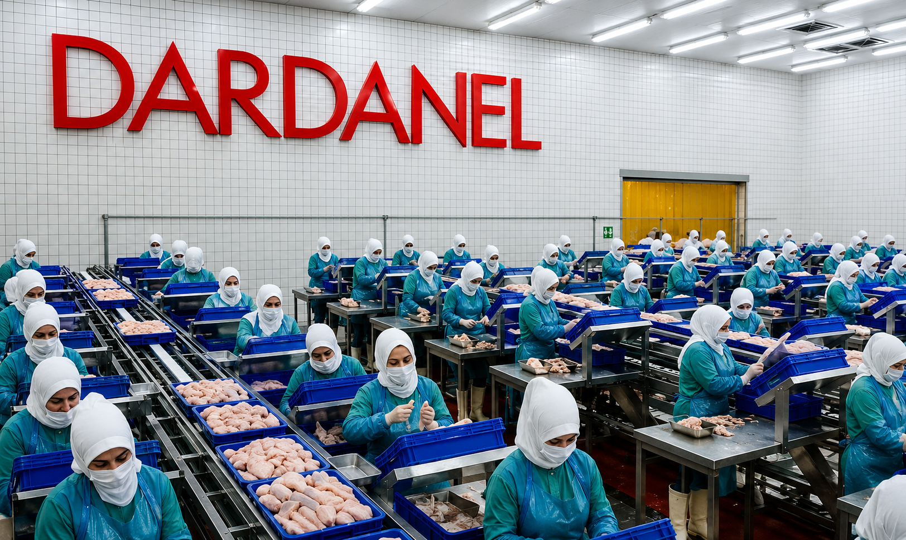
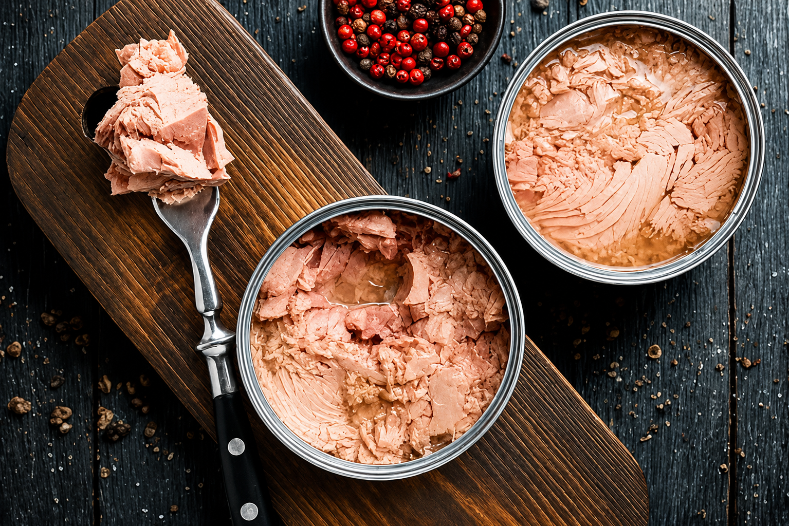
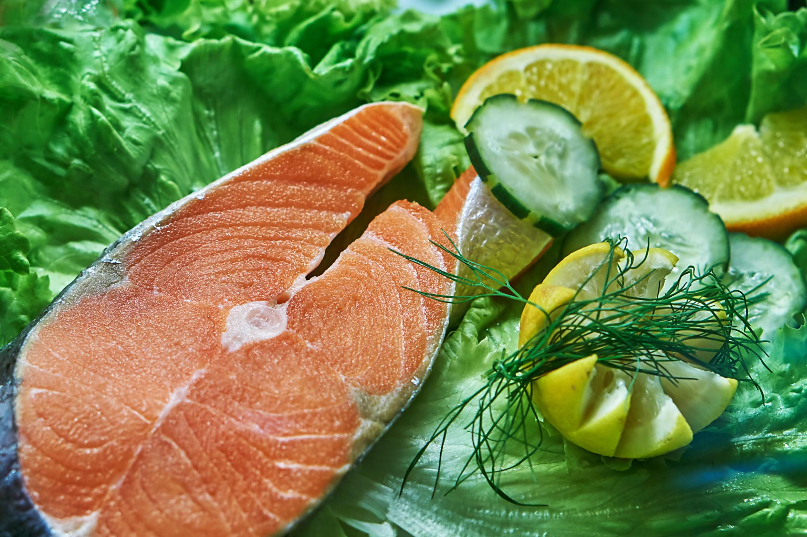
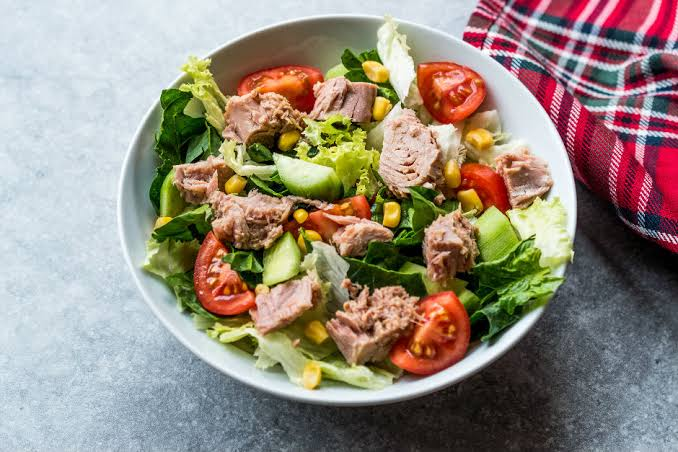

Dardanel, deniz ürünleri sektöründe uzun yıllardır faaliyet gösteren ve kaliteli ürünleriyle tüketicilerin güvenini kazanan öncü markalardan biridir.

Protein açısından zengin lezzet.

Omega-3 bakımından zengin ürünler.

Pratik ve doyurucu seçenekler.
Uluslararası standartlarda üretim.
Deniz kaynaklarının korunmasına önem verir.
Türkiye'nin lider deniz ürünleri markalarından biridir.
Yıllık Tecrübe
Ürün Çeşidi
İhracat Ülkesi